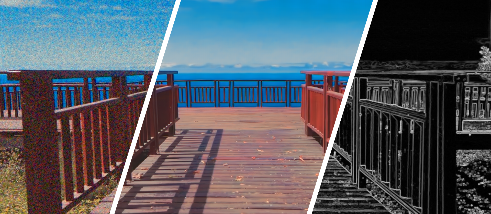

Libing Zeng (曾立兵)

Howdy!
I am a third-year Ph.D. student, supervised by Dr. Nima Khademi Kalantari, in Computer Science and Engineering department at Texas A&M University. My current research interests are using deep learning techniques to solve problems in 3D-aware View Synthesis, Depth Estimation, and Video Denoising.
Previously, I worked on light transport simulation problems under the supervision of Dr. Li-Yi Wei.
Prior to that, I got my bachelor degree in Electronic Information Engineering from Hunan University where I worked with Dr. Shaoyuan Wang.
Here is my
PAPERS
-
Test-Time Optimization for Video Depth Estimation In Submission[Abstract]
- 
-
 Rectifying Proposal Failures in Metropolis Light Transport Preprint (HAL)
Rectifying Proposal Failures in Metropolis Light Transport Preprint (HAL)
PROJECTS
-
 A Renderer Written from the Scratch (BART Animations with High-Frequency Textures) Exercises
A Renderer Written from the Scratch (BART Animations with High-Frequency Textures) Exercises -

WORK EXPERIENCE
- Guo-Yuan-Li Fruit Store, Founder, Changsha, 06/2014 – 02/2016
- MediaTek , Senior Software Engineer, Customer Project Leader, Shenzhen, 09/2011 – 05/2014
UNDERGRADUATE THESIS
-
The Design and Development of Experiment Teaching Management System Hunan University, Top 1% Thesis Award
AWARDS
- Innovation of Graduation Project, Hunan Univ., P.R. China, 2011
- National Inspirational Scholarship, Ministry of Education, P.R. China, 2010
- National University Students Intelligent Car Race, Ministry of Education, P.R. China, 2010
COMPUTER SKILLS
- Languages